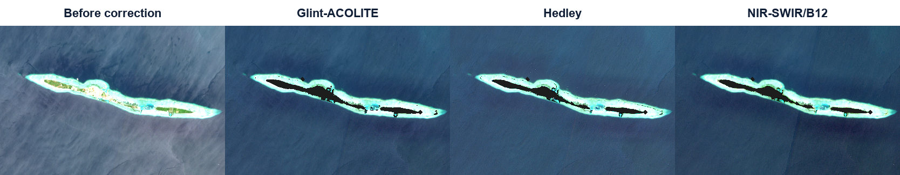

Four 8-band Planet Surface Reflectance scenes are evaluated with published NIR deglint families and an experimental ACOLITE-NIR adaptation. Every method is measured on the same strict UDM2 clear-water mask.
4Planet scenes processed
8 bands444–866 nm SuperDove SR
5 methodsevaluated on strict masks
0 SWIRB12 is Sentinel‑2 benchmark only
01 · Complete processing chain
From Planet delivery to defensible comparison
The source ZIP is preserved. Processing uses unitless Planet 6Sv2.1 surface reflectance; the result is corrected surface reflectance, not field-validated aquatic Rrs.
1 · VerifyFour SR GeoTIFFs, metadata and UDM2 rasters; band order and 1/10,000 scale.
Why the water mask changed: a per-date 866 nm threshold incorrectly removed bright glinted ocean pixels—the very pixels the correction must evaluate. The revised mask uses UDM2 quality flags plus a fixed four-date stable-land screen, so bright ocean remains present before and after correction.
How the glint-correction methods work
Problem: Sunlight reflected by the water surface makes the water look brighter than it really is.
Clue: When surface glare becomes stronger, Planet's NIR band usually becomes brighter too.
Correction: Estimate that unwanted brightness and subtract it from the seven shorter-wavelength bands.
Use as the final corrected image: Modified Hedley.
Use only to check the final choice: Lyzenga and Joyce.
Show only as experiments: Goodman and ACOLITE-NIR.
Equation symbols: ρλ = original band; ρ′λ = corrected band; ρ866 = Planet NIR; bλ = amount that the band changes with NIR.
Modified Hedley · use this result
Original Hedley: Uses the single darkest NIR pixel as the no-glint reference.
What we modified: We use the darkest 1% level (P1) instead. One unusually dark or noisy pixel therefore cannot control the correction.
Second safety change: We subtract only above P1. Pixels already darker than P1 are not changed.
ρ′λ = ρλ − bλ × max(ρ866 − P1, 0)
Decision: Use this result. It removes measurable glare while producing few negative water values.
Lyzenga · check only
What it changes: It uses the average NIR value of the selected open water as the no-glint reference.
ρ′λ = ρλ − bλ × (ρ866 − mean866)
Why show it: To see whether choosing the average instead of P1 changes the corrected image. It is not another required final image.
Joyce · check only
What it changes: It uses the most common NIR value of the selected open water as the no-glint reference.
ρ′λ = ρλ − bλ × (ρ866 − mode866)
Why show it: To test one more reference choice. It is not another required final image.
Goodman · experiment only
What it is: A published formula made for AVIRIS hyperspectral data. For this test, Planet's 666 and 866 nm bands were inserted into that formula, but its constants were not remade for SuperDove.
ρ′λ = ρλ − ρ866 + A + B × (ρ666 − ρ866)
Decision: Do not use it as the final Planet correction. It subtracts too much and creates many negative values.
ACOLITE-NIR · experiment only
What it is: Normal ACOLITE uses SWIR to estimate surface glare. Planet has no SWIR, so this test uses its 866 nm NIR band instead.
ρ′λ = ρλ − Gλ←866 × max(ρ866, 0)
Decision: Do not use it as one complete seven-band result. NIR can contain real water, reef and shallow-bottom information, so it may subtract real signal together with glare.
Complete method calculation
Modified Hedley · complete steps
Choose a date and follow this method from source pixels to the final QC decision. All five stages and their calculated results remain visible.
What “fixed regression-training water” means It is a set of open-water pixels selected before fitting and then locked for a fair comparison. It is not ice, not ground truth, and not one small rectangle. Hedley, Lyzenga and Joyce use these pixels to estimate visible–NIR relationships; Goodman and ACOLITE-NIR do not fit their transfer rule from them.
Corrected spectral bands: 7 of 8 The correction is calculated independently for 444, 492, 533, 566, 612, 666 and 707 nm. The 866 nm NIR band is the reference and remains unchanged. RGB figures visualize 492/566/666 nm, while the complete seven-band numerical results appear below.
Calculation order
All stages are expanded below. Select any node to jump directly to its large calculated result.
Map of each processing result
Choose a processing stage, then choose one product layer. The embedded georeferenced raster is placed over OpenStreetMap so its location is clear.
Loading interactive map…
Visual correction sequence
This exposes the intermediate images before the final RGB: original scene, method-specific glint/reference proxy, estimated band removal, and corrected RGB.
1 · Before correction Original Planet surface-reflectance RGB.4 · Final corrected RGB Same visible bands and stretch as the original; only UDM2-clear, non-land water is shown. Bright glinted water is retained. Land, cloud, haze, shadow and unusable pixels are transparent.
Interpretation: the middle images are calculated correction terms—not decorative simulations. Check that the estimated removal follows smooth surface glint and does not reproduce stable reef, bottom, or coastline features.
Complete Stage 1–5 results
Every calculation stage is shown in sequence for the selected date and method; nothing is hidden behind a stage selector.
All seven corrected bands — actual fit and correction results
Band
Role
Robust slope bλ
Fit R²
Median before
Median after
Median removed
Negative pixels
Seven non-reference bands (444–707 nm) are corrected. The 866 nm NIR band is used as the reference and is not corrected. The slope and R² columns describe the common robust band–866 nm fit used by Hedley, Lyzenga and Joyce; for Goodman and ACOLITE-NIR they are scene diagnostics rather than fitted method parameters.
04 · Scene inspector
Large before-and-after panels with identical display stretches
Select a date. Each method is shown as its own large panel with readable webpage text. Compare water streaks and reef texture; darkening alone is not proof of successful glint removal.
Show the compact all-method diagnostic montages
Original, Hedley, Lyzenga, Joyce and adapted Goodman. Identical RGB stretch within each date.Original, ACOLITE-NIR, estimated 566 nm removal, and negative visible/red-edge pixels.
Compare the correction results
Water pixels that became negative
A negative reflectance value is physically invalid. Fewer negative pixels is better.
NIR-linked brightness left after correction
A smaller value means less of the NIR-linked glare pattern remains. This is an image check, not field validation.
Before and after spectra — switch curves on or off
The thick dashed line is the original Planet spectrum. Click a method below to show or hide it.
Modified Hedley: the selected final correction.
Lyzenga and Joyce: checks using different reference values.
Goodman and ACOLITE-NIR: stronger experiments that remove too much in these scenes.
Why Goodman and ACOLITE-NIR are much lower: They subtract more brightness. A lower curve is not automatically better; both create invalid negative water values in multiple scenes.
Average spectrum of the retained water pixels for the selected date. Reflectance has no unit.
Method
Mean negative
Mean residual |r|
Mean green removed
Role
06 · Sentinel‑2 B12 benchmark
B12 remains a reference—not a Planet input

Representative Sentinel‑2 Tidung comparison: original, Glint‑ACOLITE, Hedley, and NIR–SWIR/B12 products from the existing report.
Correct interpretation
Sentinel‑2 B12 provides a SWIR surface-reference channel that Planet does not measure. We compare method behaviour, spectral preservation and failure indicators; we do not describe Planet NIR as a substitute B12 observation.
No direct sensor ranking
The Planet and Sentinel‑2 acquisitions have different dates, resolutions and viewing conditions. This is a methodological benchmark, not pixel-matched validation.
Compare the corrected spectra with HydroLight
What the graph does: It compares the average Planet spectrum in one offshore-water box with one simulated water spectrum.
What it can tell us: Whether the corrected spectral shape is reasonable for the selected simulated water conditions.
What it cannot prove: It is not field validation and it does not test every pixel.
Important: A method can match the average curve but still create invalid negative pixels elsewhere.
Planet methods and selected HydroLight simulation
Yellow boxes are fixed PC1–PC5 offshore-water candidates shared by all four Planet dates. Select PC1–PC5 above.
Older three-band comparison
Method
Mean CLR RMSE
Mean spectral angle
Interpretation
This older comparison uses only 492, 566 and 666 nm. Use “Planet SuperDove SRF evaluation” above for the preferred seven-band comparison.
Final choice
Use Modified Hedley
This is the selected corrected Planet image. It removes measurable glare and creates very few negative water values.
Keep Lyzenga and Joyce only as checks
They show whether using a different no-glint NIR reference changes the answer. They are not additional final datasets.
Do not use Goodman or ACOLITE-NIR as the final result
They remove too much brightness and create many invalid negative values. Keep them only to document the comparison.
Important: Modified Hedley is the best result from these image tests, but it has not yet been confirmed with field measurements. Check reef areas carefully before ecological analysis.
09 · Deliverables and reproducibility
Files retained with the report
Four corrected 8-band GeoTIFFs for each published method (16 files).
Four experimental ACOLITE-NIR NetCDF products and their exported layers in the retained earlier run.
Per-scene method metrics in JSON and CSV.
Regression slopes, R² and sample counts in JSON and CSV.
Per-date and per-method step-audit figures for inputs, masks, references, removed terms, corrected images and negative-pixel QA.
Fixed Planet clear-water ROI definitions, maps, spectra and HydroLight metrics.
Processing manifest documenting masks, baselines, wavelengths and Goodman constants.
This self-contained HTML report, with all preview imagery embedded.
Main output directory: outputs/PlanetDove_Tidung_Published_Methods_20260909